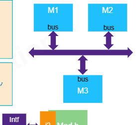
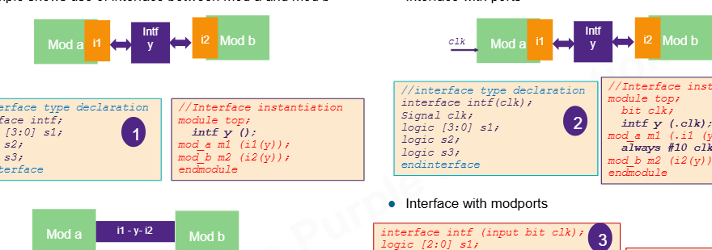
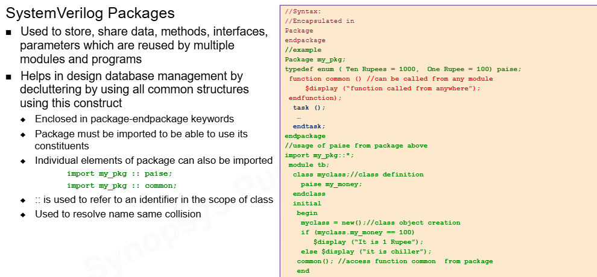

Ideia central
Apesar do nome "for Design", este bloco mistura recursos de design, verificação e modelagem. A habilidade mais importante é classificar cada recurso antes de usar.
design RTL -> interfaces, modports, packages, guidelines de síntese
verificação -> assertions, clocking blocks, program blocks
modelagem/OOP -> classes, herança, polimorfismo, DPI, dynamic arraysInterfaces
Interfaces são o tópico mais importante deste bloco para projeto. Elas agrupam sinais relacionados e reduzem o erro de conectar protocolos manualmente.
interface bus_if;
logic valid;
logic ready;
logic [31:0] data;
logic [3:0] id;
endinterfaceSem interface, cada módulo carrega uma lista de portas. Com interface, o protocolo aparece como uma unidade. Isso melhora manutenção, revisão e evolução do design.

- Reduz erro humano em conexões.
- Centraliza sinais de protocolo.
- Pode conter parâmetros, constantes, funções, tasks e assertions.
- Pode ser usada em design quando o fluxo de síntese suporta o estilo escolhido.
Ports e modports
Interfaces podem ter portas, como clock. Também podem ter modport, que define a visão
de cada módulo sobre a interface.
interface intf(input bit clk);
logic [2:0] s1;
logic s2;
logic q;
modport s(input clk, s1, s2, output q);
endinterface
Guidelines de síntese
O slide de guidelines é o mais aplicável ao nosso projeto. Ele transforma SystemVerilog em estilo de RTL limpo e sintetizável.
| Prática | Por que importa |
|---|---|
Use always_comb, always_ff e always_latch conforme a intenção. | A ferramenta e o revisor entendem se é combinacional, FF ou latch. |
| Não misture bordas positiva e negativa sem arquitetura clara. | Evita confusão de timing e síntese. |
Use = em combinacional e <= em sequencial. | Preserva o modelo de atualização de registradores. |
Escolha if/case, unique e priority conforme a lógica pretendida. | Reduz mismatch entre simulação e síntese. |
| Nomeie sinais pelo significado. | Facilita waveform, revisão e debug. |
always_comb begin
y = a & b;
end
always_ff @(posedge clk or negedge rst_n) begin
if (!rst_n) q <= '0;
else q <= d;
endPackages e escopo
Packages organizam definições compartilhadas: tipos, parâmetros, constantes, funções e classes. Em RTL, são úteis para centralizar enums, structs e parâmetros de protocolo.
package cpu_pkg;
typedef enum logic [2:0] {
OP_ADD,
OP_SUB,
OP_AND,
OP_OR
} opcode_t;
parameter int XLEN = 32;
endpackage
O operador :: acessa um item dentro de um escopo:
cpu_pkg::opcode_t op;
:: resolve colisão de nomes.
OOP: classes, herança e polimorfismo
Os slides de OOP ensinam conceitos importantes para verificação. Uma classe encapsula dados e métodos. Herança permite que uma classe filha reaproveite propriedades e métodos da classe pai.
class ethernet_packet;
bit [7:0] header;
bit [12:0] payload;
function void display();
$display("header=%0h payload=%0h", header, payload);
endfunction
endclass
class network_packet extends ethernet_packet;
bit parity;
function void display();
super.display();
$display("parity=%0b", parity);
endfunction
endclassPor que isso aparece em "for Design"?
Porque SystemVerilog é uma linguagem unificada. O curso mostra recursos de modelagem e verificação junto com design. Para RTL sintetizável, classes normalmente não entram no DUT; para testbench, elas são a base de transações, drivers, monitores e scoreboards.
Clocking e program blocks
Clocking blocks ajudam testbench a amostrar e dirigir sinais em relação ao clock, reduzindo races.
clocking cb @(posedge clk);
default input #1ns output #2ns;
input data;
output valid;
endclockingProgram blocks particionam código de teste e identificam claramente o que pertence ao testbench.
program test(input logic clk);
initial begin
// sequência de teste
end
endprogramEsses recursos não descrevem o hardware principal; eles organizam o ambiente de simulação.
Assertions e propriedades
Assertions transformam uma regra esperada em checagem executável. Immediate assertions são locais; concurrent assertions usam clock e propriedades temporais.
assert property (@(posedge clk) req |-> ##[1:2] ack);
O operador |-> significa implicação temporal: se o antecedente ocorre, o consequente
deve ocorrer na janela especificada.
Severidades como $fatal, $error, $warning e $info
controlam como a falha aparece no log.
DPI e integração com C/C++
DPI permite chamar funções C/C++ a partir de SystemVerilog, ou exportar funções SystemVerilog para C. Isso é útil para modelos de referência e co-simulação.
import "DPI-C" function int golden_model(input int a, input int b);Para o projeto RTL, pense nisso como recurso de testbench/simulação. A síntese não transforma uma função C++ em portas lógicas.
Strings, arrays dinâmicos e queues
O slide mostra tipos muito bons para testbench: string, dynamic arrays, associative arrays
e queues.
string name = "SystemVerilog";
int dyn_array[];
int assoc_array[string];
int queue[$];Um scoreboard pode usar associative array para guardar respostas esperadas por endereço. Uma queue pode armazenar transações pendentes. Para RTL sintetizável, use estruturas de tamanho definido e inferível.
`$cast`
$cast faz conversão controlada. Como task, falha pode gerar erro de runtime. Como function,
você testa sucesso ou falha.
if ($cast(target, source)) begin
// sucesso
end else begin
// falha controlada
endÉ especialmente útil com enums e objetos de classe em testbench. Em RTL comum, casting deve ser explícito, simples e motivado por largura/tipo.
Quizzes explicados
Inheritance.
:: is used to avoid name same collision.
Scope resolution operator.
|->.
False. Interfaces can be used in design when supported by the flow.
O que levar para o projeto
- Use interfaces se elas clarearem conexões e forem aceitas pelo fluxo Synopsys/professor.
- Use packages para centralizar tipos, parâmetros, enums e structs compartilhados.
- Faça RTL com
always_combealways_ffbem separados. - Mantenha OOP, DPI, queues e dynamic arrays no testbench/modelagem.
- Use assertions para checar protocolos, FSMs, FIFOs e arbiters.
- Documente em filelists/makefiles quais arquivos são RTL, testbench, interfaces e packages.
Base Markdown: aula didática, texto extraído, cobertura slide a slide.